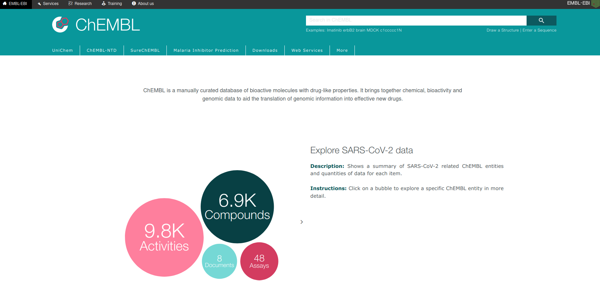
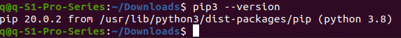
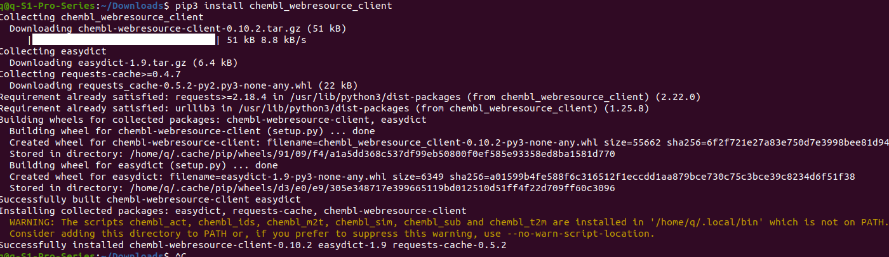
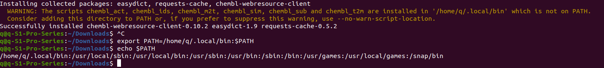
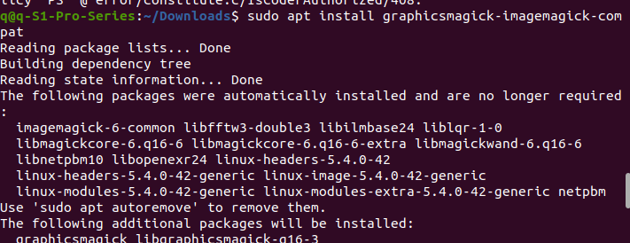
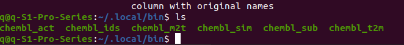
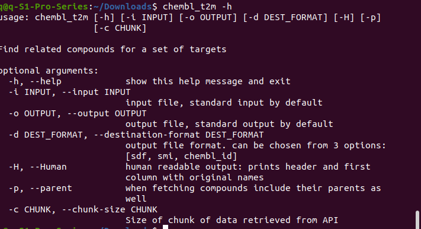
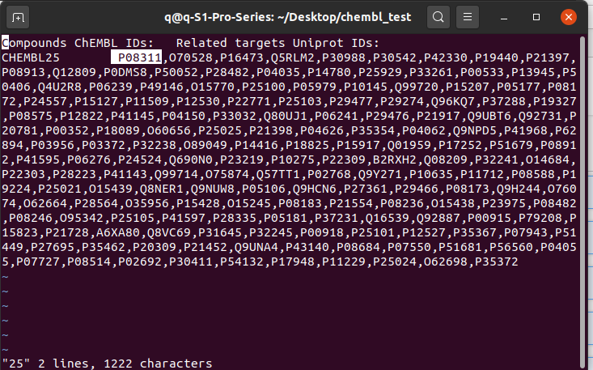

How to install chembl_web_client. ChEMBL由欧洲生物信息研究所EMBL-EBI数据库运营维护的库，主要为管理编辑具有药物性质的生物活性分子，它汇集了化学、生物活性和基因组数据.
 First of all, let’s be clear, there is already a mature CHEMBL database website you can use as above. However, it is still good if you want to have a better experience or are a regular user, the chembl_web_client is faster and easier to handle, especially when it comes to multiple compounds. And you can define more screening conditions if you use a web client instead of a web browser.Step1
>First of first, you need to check if you have “pip” on your linux. Pip is an install tool needed to install the chembl_web_client, so before we could go with our installation we have to have pip first. Alternatively, you could head to chembl_web_client in Github for more reading. My Linux system is Ubuntu 20.04, so the python is python3, and there is no pip installed yet. Let’s install now as administrator
$sudo apt update #input your password $ sudo apt install python3-pip #input your password $ pip3 --versionit looks like the next image. 
NOTE: If you are using python2, the installing method will be slightly different, it won’t be discussed here.
Step2
In your terminal, type$ pip3 install chembl_webresource_client #note, use pip3, not pip
Make sure you don’t miss spell anything, please, including the bottom line. After finishing, there might be a warning message about environment variable PATH.
 Let’s fix it now. In the terminal, type$ export PATH=/home/YOUR-NAME/.local/bin:$PATHyou need to copy the absolute path from the yellow warning info since my computer name is “q” and obviously should be different from yours. Now let’s double check if the path has been included in $PATH, type
echo $PATH home/q/.local/bin:/usr/local/sbin:/usr/local/bin:/usr/sbin:/usr/bin:/sbin:/bin:/usr/games:/usr/local/games:/snap/bin
It shows the list already contains the previously warned path which for my system is “home/q/.local/bin”
Now when moving ahead to importing the library, some unexpected errors happens again.q@q-S1-Pro-Series:~/Downloads$ import csv from chembl_webresource_client.new_client import new_client import-im6.q16: attempt to perform an operation not allowed by the security policy PS' @ error/constitute.c/IsCoderAuthorized/408.
This error happens after it indicates import should be installed using the recommended “sudo apt install XXX” and the first one was chosen. To feel lucky, the third one was also installed, and the error magically disappeared. The image below shows the process of install the 3rd recommended “sudo apt install “ command. It may differ in your system or this error might not happen.
But the error remains, though the “import XX” works, the “from chembl_webresource_client.new_client import new_client” failed. And it is decided to skip leaving for later solvation.
Step 3. Now lets test a bit
 let’s typepushd ~/.local/bin
ls
to check the 6 green executable modules we have just installed . Namely, the six arechembl_act / chembl_ids / chembl_m2t /chembl_sim / chembl_sub / chembl_t2m
Now use "popd" to go back the working folder. At this stage, you are free to use these 6 commands from anywhere in your computer, as the PATH has been properly set up in the middle of Step2. Type -help to get usage info, for example: type “ chembl_t2m -h”  From the help message info, we know “chembl_t2m” is used for finding multiple compounds for a certain target. Another example, imagine now you have a compound name "aspirin", you want to know the exact chembl ID try the following commamds$touch aspirin.txt $ echo asporin > aspirin.txt $ chembl_ids -i aspirin.txt -o aspirin_id
after the finish, if you use "vi aspirin_id", you will see the chembl ID is CHEMBL25. In this simple case, the speed of using the web_client and the web browser seems not improved much, but imagine when you got a thousand molecule names, it is obviously will be easier with this web_client, what you need to do is putting all the names into a single .txt, and you will get another .txt listed all the cheml IDs.
Let's try how to find protein target for a certain compound, still use aspirin as an example, go to command line, type:
$ chembl_m2t -i id.txt -o 25 -s chembl_id -H
id.txt contains the aspirin id as CHEMBL25, 25 is a random name I give the output, you can give any name. -H means only human being related targets are of interested here. after press "ENTER" it will take several minites to give out the output named as 25, again, the name here is just name, you can name it aspirin_target if you wish.
$ vi 25the next image is the output listing a lot protein IDs asscociated with UniProt database. 